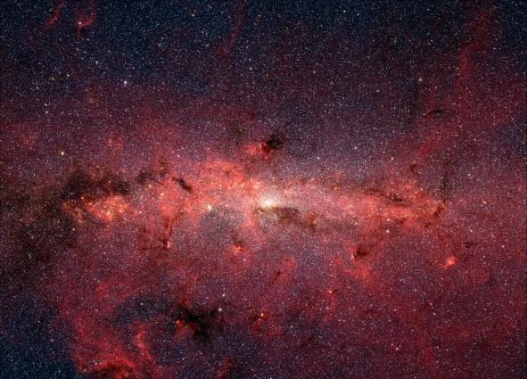

Across the Night Wall (Part 4)
by
Martin Isitt
To Across the Night Wall (Part 1)
To Across the Night Wall (Part 3)
As soon as Sara brought me out of the freezer it was obvious that something was badly wrong. The cryo-bay had been reduced to a ruin. Almost all of the tanks were broken from their mountings and breached. What remained of their contents, my companions, had over the ages gone to dust. How long ago had this happened?
Sara told me that the computer, directed by some kind of failsafe, had defrosted her. She awoke to an apparently empty ship. It had been dark, and, though she’d searched extensively, there was no trace of the previous shift. Most of the sensorium networks had been smashed, so she had no idea of the condition of the rest of the ship. There were plates welded over a lot of the access ports leading to the outer habitat, while others were torn open. Before going to investigate, Sara had thought it prudent to wake the remaining Custodians. It had been touch and go with my tank. Like most of the others it had been ripped away from the wall by whatever had demolished the cryo-bay. Luckily vital connections had remained intact, and though the casing was cracked, moisture in the atmosphere had iced over the breach, thereby resealing it.
The inner habitat looked like a war zone. In places whole bulkheads had been ruptured. There were blast marks everywhere, evidence of running gunfights. In the corridors leading to the Eternity’s main bridge and control centre we found hastily erected barricades. Everywhere had a quality of age about it. Life-support had kept the air clean, but things that were meant to endure had begun to degrade a long time ago.
Sara was unable to answer any of our questions satisfactorily because of limited access to the ship’s systems. While others were trying to come to terms with our situation, and the loss of all but a handful of the immortal crew, it was this lack of information that galvanised me into action almost immediately.
I set to work organising repairs.
Thoughts quickly turned to the Residents. As yet we had no contact with the outer habitat. Looking down from the observation blisters, we could see no activity through the utter darkness that hung between the two rotating sections. There had to have been a radical drop in temperature down there. None of the solar lamps were working; icy drafts seeped in through the cracks in the blister windows. I pressed to forestall an expedition into the outer habitat until I’d re-established communication with the observation systems. It was an act of will to go against my primary coding, but Sara agreed, and reasoned that caution on our part would assist the Residents’ chances in the long run. But the vote went against us — the Residents were our charges and we had a duty to go to their aid.
Only nineteen Custodians, me included, had been saved from the freezers, out of five thousand. A seven-strong team went down equipped with thermal suits. A few carried small arms. We tracked them with portable monitors cannibalised from environmental combat suits.
In the access ring — a hoop-shaped corridor circling the junction where the inner habitat met the vast flat wall of the outer habitat — they selected one of the open shafts and began their laborious descent. None of the huge elevators worked and it took them nearly four days to make their way down countless steps to the surface, twenty kilometres below.
At last they stepped out onto the low platform at the foot of the wall. With their powerful spotlights they pierced the thick ground mist that lay over the bleak landscape. Before them spread a terrain of naked rock and earth. Vegetation consisted of patchwork carpets: some kind of mossy brush. Stunted trees stood about with twisted bows and leafless skeletal limbs. Several metres from the platform towered a conical shaft of rock. It resembled a tall thin termite mound, but the openings were fist-sized. Closer examination revealed shards of some pale, brittle material.
The team set out across the desolate landscape; with each new discovery my unease increased. As I looked on I began to realise that what I was seeing was familiar, but it was not until one of the team spotted a distant red glow in the mist that I finally understood. Optics zoomed in on a mountainous form, a grotesque hunched figure apparently hewn from the bedrock itself. Crimson light glowed from what might have been eyes and mouth.
The other observers thought that I’d gone mad when I suddenly started to scream at them to get out of there. But I would not be pacified and continued to insist that I knew they were in imminent danger. “Call them back,” I pressed, turning to Sara. “I know what I’m talking about. I’ve seen this before.”
She was nervous, uncertain in the face of my vehemence, but reason quickly asserted itself. “It’s just a statue,” she stated. “An idol of some kind. It may give us some clue to what happened to the Residents.”
Then, before I could respond, one of the team, already on edge because of my outburst, spotted something large moving at the limit of his light beam. When the others looked, there was nothing there. The wall was lost in the darkness somewhere behind them; they had been making slow progress across this eerie terrain for nearly an hour.
Perhaps it was my insistence, or simply the sense of isolation, but at last they were convinced it might be a good idea to turn back. But by then it was far too late.
The attack was swift and savage. We saw only glimpses: bulky forms submerged in shadow, moments of detail in stark torchlight. Unearthly roars poured from the monitors, and screams of terror abruptly cut off.
Seconds later all the readouts were flatlining and the screens were black.
We destroyed the stairwells in all the shafts and resealed every access hatch with thick mono-crystal plating. Sentries were posted on rotation, armed with the most formidable firepower that the armouries had on offer. Sara took her turn, but those of us with technical expertise were exempt.
But the security measures did little to quell the haunting dread that seemed now to reside with each of us, in this gloomy labyrinth of passages and chambers. And it didn’t inspire our confidence that without access to sensors of any kind the Universe outside was as much a mystery as the darkness of the Residents' habitat. We could be anywhere: even about to plough into a sun, as someone helpfully pointed out.
Thus my first concern was to get the ship’s mainframe back on line. It didn’t take long. I used an e.c. suit’s monitor to interface, which gave me a visual data display. What I discovered was initially discouraging. Seventy percent of the core was unresponsive.
Then I found out why.
Sara read my expression as soon as I entered the quarters we were sharing. She looked up, frowning, from what she was doing; the sombre light moved over her white features in a way that had an almost calming effect on me.
Renewing our longstanding affair, we had sought and found comfort in each other. Lost in passion we could alleviate the fear, at least temporarily. As we’d slept through the early years crossing the Night Wall, we had come together in the sensorium. But with the system down, the dreams had returned and now we were once again reliant on physical contact. It ached to be away from her; being in the same room was uncomfortable without touching.
She lifted her hands towards me, urging me to take them. “What’s wrong, my Love?”
I told her about the mainframe. “The parts have degraded,” I said, coming to sit beside her.
She caressed my face, her long, long legs closing about mine. “In what way, degraded?”
“Over time.”
“I thought that they’re supposed to last indefinitely.”
I nodded. It was true. “Some of the seals have ruptured.”
“Nevertheless. That gives them a few hundred thousand years.”
“Sara, it’s been more than five million years.”
The look in her eyes mirrored the shock that I myself was still reeling from, she tried to deny it, told me I was wrong.
“The mainframe’s clock has been running all this time.”
“Then it's wrong,” she insisted.
“That’s why nothing works anymore,” I said. “True: a lot of it was wilfully destroyed, but that doesn’t account for the totality of failure in almost every minor system. It’s simply parts wearing out. We’re lucky hydrocarbons were phased out before they built this ship, or it would have come apart long ago: we’d be nothing but a cloud of components. As it is, she can hold together structurally forever, but some of the more complex systems have a shelf life.”
“What about power?”
“The field around the singularity is intact and the quark chamber’s still ticking over. It powered down after we reached cruising speed, so there is plenty of fuel — same with the fusion plants. I’m running a diagnostic of the engines. Both navigation and life-support seem to be working, though there was a significant power drain in the outer habitat — hence the temperature drop —”
“You said navigation,” she cut in. “So where are we?”
“I can’t say yet. We need a working holo-plate to view the data. So far all the stream converters I’ve found have degraded. I was planning an expedition up to the hub to raid the stores. There should be spares in vacuum cases.”
“I’ll go with you,” she said hastily. For an immortal she always seemed so impatient — one of those childlike qualities that made me love her. Besides, I would not have been able to go without her.
A week later there were eleven of us left. One of the sentries disappeared while Sara and I were at the hub. There was no trace of her, no blood, no signs of struggle, just a kinetic rifle lying on the deck. The weapon had not been fired.
We all gathered in the astro-lab, tense with anticipation, as the plate groaned into life. I brought up a stellar chart to show local space. On seeing the image I thought something was wrong with the projection. A spherical representation of intergalactic space, a hundred metres across, floated over the holo-plate. The Eternity was a labelled point at the centre. The image flickered intermittently, occasionally losing resolution, then snapping back into focus.
“Try zooming out,” Sara suggested.
I entered the command. For a time nothing seemed to happen. Gradually, flecks of red and amber light started to appear on the periphery, near the bottom. The scale told me we were looking at a section of space that was over one million light-years across — space that was utterly devoid of stars, and us right in the middle of it.
“Is that the Milky Way?” Sara asked, indicating the speckling of faint lights.
“Let’s see.” The image receded further and a recognisable spiral arm slid into view. There was audible astonishment amongst our little group — and disbelief. But it was plausible. Five million years at ten percent relativistic speed can get you an awful long way. At some point, we must have altered course. The disk now lay approximately five hundred and twenty thousand light-years beneath us.
But, I wondered, where were we going ... and why?
I extended our trajectory. After long moments of near-featureless intergalactic space, the vaporous mass of an irregular galaxy began to creep across the projection. The stellar chart identified it as NGC 6822. “Barnard’s Galaxy,” I breathed. “Distance one point one, oh, five million light-years from our current position.”
We all stared in silence at the bright, blue-tinged conglomeration of several billion stars. Beside me, Sara was squinting as though she was trying to peer deeper into the image, to penetrate through it in search of something the rest of us had missed. I asked her what she was looking for.
“Go back to the Milky Way.”
I obliged, panning down again. The speck labelled Eternity reappeared, climbing through virtual space, followed eventually by the galactic plane. First, a spiral arm swept across the holo-plate, then the disk itself. I flipped it up through its planar axis so that we were look down on it from about thirty degrees from the vertical. Its spectrum was distorted to shades of crimson and amber.
“What’s wrong with the stars?” asked someone standing behind me.
“Probably a glitch in the plate.” I fiddled with the resolution and hue adjusters, then swivelled the point of view. No matter what I tried, I could not bring the brightness up to match the image of Barnard’s Galaxy.
“There are still some bright stars in there,” someone else observed. “But most of them look like they’ve aged to red or orange dwarfs. Can you get close in on one of the fainter ones?”
“I can, though the picture will be half a million years out of date,” I pointed out. On my command, the spiral arm exploded outwards. Stars rushed at us, a stellar horde stampeding in three dimensions. Veering and swerving, I searched for a likely candidate. There were many that had become little more than crimson specks. I quickly chose one and zeroed in. Presently, a solitary pimple of red light burned above the holo-plate. surrounded by absolute black. It was named with a sequence of numbers. We watched it swell before us until it resolved itself, becoming a gigantic ring of dull red fire. Huge coronal mass ejections streamed outwards in every direction: I could not throw off the notion that the whole star seemed to convulse as though subjected to some kind of torment. At its centre, filling most of its volume, there rested a core of utterly featureless blackness. I knew straight away that this must be the cause of its pain.
“It looks...” I ventured, and paused to stare closely at the malignant mass that festered at the centre of the dying sun.
“...like it’s being eaten from the inside out,” Sara finished.
As if her words had pulled a cerebral trigger, my thoughts jerked violently from the present. Suddenly I was thrown back into that dream world of darkness that I was transported to in cryo-sleep. In the Pyramid that they called the Redoubt, the people would talk of the darkness outside their refuge, as though it were an entity to which they attributed an unholy will. Nevertheless, its footprint certainly seemed distinctive enough: it smothered the light; it corrupted life into some dark parody of itself.
But was that what we were seeing here? And could it be that, if my dreams were real, the Eternity, by changing its course, had been made to serve some sort of function for this entity of darkness?
The diseased star withdrew. Other stars fell into view until the spectrally distorted vision of our galaxy was there in its entirety again. I pulled back further. More galaxies sidled in; eventually we were looking at the entire local cluster. I saw it straight away. The darkness had infected the majority of the galaxies; some had vanished completely, their labels pointing at nothing. A great swath of bloody flecks encroached upon the last bastion of healthy bright galaxies, the nearest of these being the smudged glow that carried the label: NGC 6822 — our current destination.
To Across the Night Wall (Part 5)
© 2006 by Martin Isitt.
Spitzer infrared space telescope image of the Milky Way by NASA.